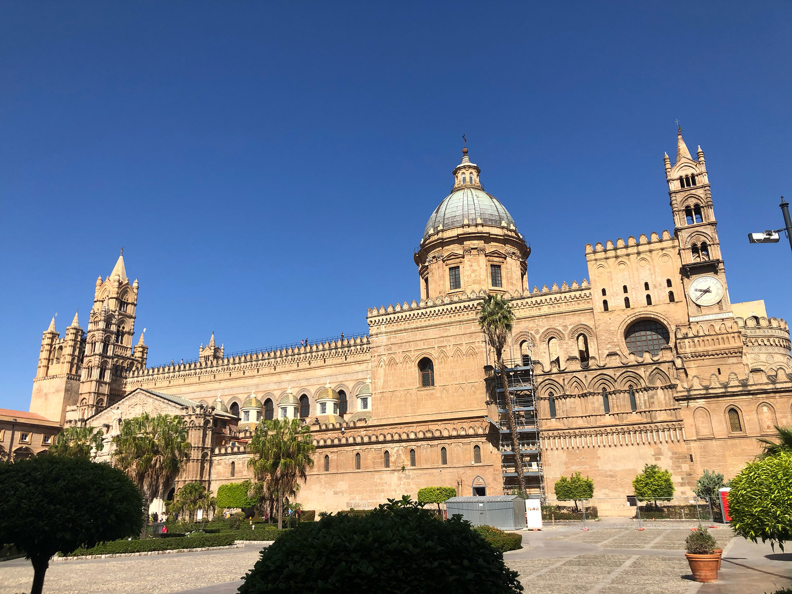

ISQCMC ’25 : 3rd International Symposium on Quantum Computing and Musical Creativity
Palermo, Orto Botanico, Sala Lanza & Complesso monumentale dello Steri, sala delle Capriate, University of Palermo, Italy
October 28-29, 2025
How to get to the Venues
Venue for Day 1 - Orto Botanico
From the airport, take the train direction “Palermo Centrale”. Orto Botanico is at a walking distance from the station. The arrival place of the airport-center bus is nearby the central station as well.
Venue for Day 2 - Palazzo Steri
The Complesso Monumentale dello Steri (or Palazzo Steri) is at a walking distance from the central station, and also from the Orto Botanico.
Hotels nearby
Hotel Porta Felice Via Butera 45, 90133 Palermo Tel. +390916175678
https://hotelportafelice.it
Palazzo Natoli Boutique Hotel, Via SS Salvatore 6/8/10 901345 Palermo, Tel +39091 778 0666
https://www.palazzonatoli.com
Bastione Spasimo Hotel Via Filippo Evola 1, 90133 Palermo Tel +39 091 649 7212
https://www.bastionespasimo.com
L' Hôtellerie Easy Suites, Foro Italico Umberto I 13, 90133 Palermo
https://www.lhotellerie.it
Spasimo Hôtellerie Via dello Spasimo, 72, 90133 Palermo
https://www.spasimoboutiquehotel.com
[Holiday Home] Oasi Porta Felice Via Butera 25, 90133 Palermo tel +39 373 873 4818
(Booking.com: https://www.booking.com/hotel/it/oasi-porta-felice.it.html)
Other hotels in downtown
Grand Hotel Wagner Via Riccardo Wagner, 2, 90139 Palermo +39 091 336 572 https://www.grandhotelwagner.it/
Hotel Joli | Via Michele Amari, 11 | 90139 | Palermo tel + 39 091 611 17 65 https://www.hoteljoli.com
Hotel Tonic Via Mariano Stabile 126 90139 Palermo tel +39 091581754 https://www.hoteltonic.it
What to visit in Palermo
Palazzo Steri, the place of the conference, https://musei.unipa.it/steri.html https://turismo.comune.palermo.it/palermo-welcome-luogo-dettaglio.php?tp=68&det=20&id=111
Teatro Massimo, https://www.teatromassimo.it/
pic by Maria Mannone
Orto Botanico, https://www.ortobotanico.unipa.it/
pic by Maria Mannone
Palazzo Reale and Cappella Palatina, https://www.federicosecondo.org/palazzo-reale-2/
Cattedrale, https://www.cattedrale.palermo.it/
pic by Maria Mannone
Casa Professa, https://casaprofessa.it/
pic by Maria Mannone
Palazzo Abatellis, https://turismo.comune.palermo.it/palermo-welcome-luogo-dettaglio.php?tp=68&det=21&id=177
pic by José Luiz Bernardes Ribeiro
[Nearby Palermo] Duomo di Monreale and cloister, http://www.monrealeduomo.it/
pic by Maria Mannone
[Nearby Palermo] Mondello (beach)
pic by Andrea Calcagno
.jpg){kind=link}